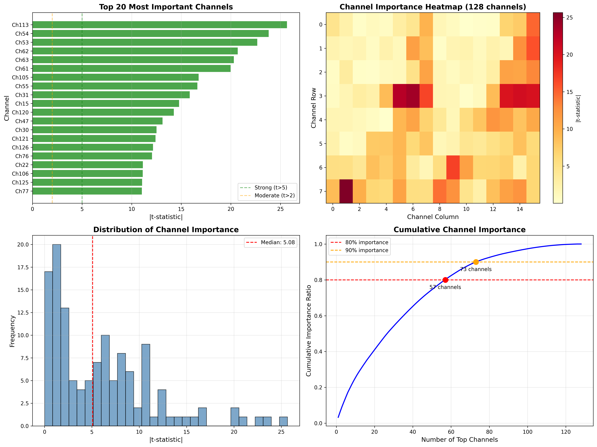
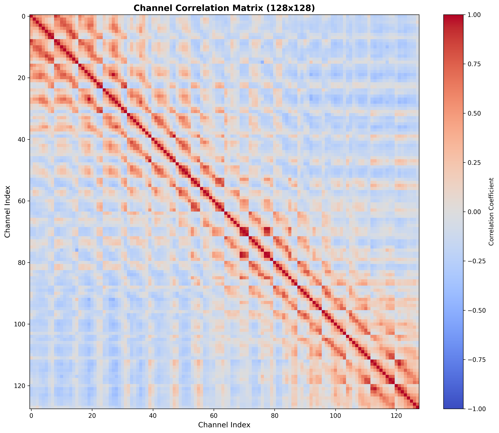

iEEG Data Analysis Report
Analysis Date: 2026-02-06 15:49:22
Experiment Configuration: exp_id=3
Evaluation Metrics: Sensitivity & Specificity
Medical Standard: Sensitivity ≥ 0.85 (avoid missing seizure detections)
Executive Summary
Current CNN Model Performance
Key Findings
- Cascade Feasibility: 86.3% high-confidence samples
- Optimal Threshold: τ = 0.10
- Performance at Threshold: Sensitivity = 0.944, Specificity = 0.977
- Medical Requirements: ✓ Met (Sensitivity ≥ 0.85)
- Frequency Features: beta band most discriminative (t-stat=6.49)
- Channel Importance: Top channel = 113 (t-stat=25.65)
- Time-Domain Features: line_length most discriminative (t-stat=13.22)
Cascade Architecture Recommendation
Recommendation: Recommend Option B: FFT + MLP - beta band shows strong discriminability
Detailed Analysis
1. Confidence & Cascade Analysis (Core)
Analyze model confidence on different samples to determine the ratio of "easy" samples that can be handled by a simple model.


2. Frequency Feature Analysis
Analyze discriminability of different EEG frequency bands (delta, theta, alpha, beta, gamma).

3. Channel Importance Analysis
Analyze the importance of 128 EEG channels for seizure detection. Identifies which channels are most discriminative.
 4. Time-Domain Feature Analysis
Analyze discriminability of statistical time-domain features (mean, std, energy, line length, etc.).

Conclusions & Recommendations
Data-Driven Recommendations:
1. Cascade Feasibility Assessment
- High-confidence sample ratio: 86.3%
- ✓ Cascade architecture RECOMMENDED
2. Simple Model Design Recommendations
- Frequency feature discriminability: beta band t-stat=6.49
- Recommend FFT+MLP (Option B)
3. Channel Selection Strategy
- Top 5 most important channels: [113, 54, 53, 62, 63]
- Channel selector should learn attention weights focusing on these discriminative channels
- Top channel 113 shows t-stat=25.65
4. Feature Engineering Insights
- Most discriminative time-domain feature: line_length (t-stat=13.22)
- Consider incorporating this feature in lightweight simple model
5. Performance Guarantee
- MUST ensure simple model achieves sensitivity ≥ 0.85 on easy samples
- Complex model handles hard samples to guarantee overall sensitivity
Generated by analyze_data.py | Environment: remote